Contents
- Basic Catalog Statistics
- Catalog 1
- Catalog 2
- Comparison Criteria
- Map of Events
- Summary of Matching Events
- Authoritative Events Check
- Time Series Summary of Catalog Events
- Matching events
- Missing Events
- No Similar Origin Time
- Location Disagreement
- Potential Problem Events
- Depth Differences
- Magnitude Differences
- Depth and Magnitude Differences
Basic Catalog Statistics
Catalog 1
Catalog Name: ComCat 2015 - 2016 File Name: /Users/mrperry/LIGO/ForLIGO.csv First Date in Catalog: 2015-01-01 05:01:10.640 Last Date in Catalog: 2016-07-15 10:54:07.110 Total Number of Events: 10535 earthquake: 10534 nuclear explosion: 1 Minimum Latitude: -71.7339 Maximum Latitude: 86.1076 Minimum Longitude: -179.9811 Maximum Longitude: 179.9993 Minimum Depth: 0 Maximum Depth: 683.4 Minimum Magnitude: 4.5 Maximum Magnitude: 8.3 Number of 0 magnitude events: 0 Number of NaN magnitude events: 0
Catalog 2
Catalog Name: Event from LLO Analysis File Name: /Users/mrperry/LIGO/LHO_LibComCat.csv First Date in Catalog: 2015-09-12 20:32:27.000 Last Date in Catalog: 2016-01-19 22:04:07.300 Total Number of Events: 330 earthquake: 330 Minimum Latitude: -62.2 Maximum Latitude: 55 Minimum Longitude: -178.7 Maximum Longitude: 179.9 Minimum Depth: 0 Maximum Depth: 608.4 Minimum Magnitude: 5 Maximum Magnitude: 8.3 Number of 0 magnitude events: 0 Number of NaN magnitude events: 0
Comparison Criteria
------- Filters ------ Overlapping time period: 12-Sep-2015 20:32:11 to 19-Jan-2016 22:04:23 Region: all Lower Mag. Limit: -10 ---Matching Criteria--- Time window: 16 s Distance window: 100 km --- Problem Event Parameter Tolerance --- Magnitude tolerance: 9999 Depth tolerance: 9999 km Events from each catalog are removed from the comparison if they don't match the filtering criteria. Events are determined to be matching if they are within both origin time and location matching criteria. There are two categories of missing events. The first is when events with similar origin times cannot be found in either catalog. The second occurs if similar origin times are found but the locations are too far apart. Problem events match in both origin time and location, but could have descrepencies in depth, magnitude, or both.
Map of Events
Map of all events in the overlapping time period that match the comparison criteria
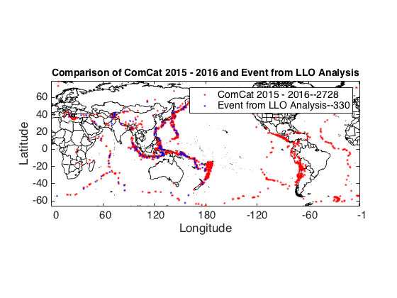Summary of Matching Events
-- Number of events after filtering --
2728 ComCat 2015 - 2016 events in the target region.
330 Event from LLO Analysis events in the target region.
---------------- MATCHING EVENTS ----------------
331 ComCat 2015 - 2016 and Event from LLO Analysis meet matching criteria.
-------------------- MISSING EVENTS --------------------
---Total Missing Events---
There are 2397 event(s) in ComCat 2015 - 2016
missing from Event from LLO Analysis
There are 3 event(s) in Event from LLO Analysis
missing from ComCat 2015 - 2016
---- No Similar Origin Times ----
2395 event(s) in ComCat 2015 - 2016 have origin times not in Event from LLO Analysis
1 event(s) in Event from LLO Analysis have origin times not in ComCat 2015 - 2016
---- Match in time but NOT location ----
2 events matched in time but location differences were greater than 100 km apart
-------------------- POSSIBLE PROBLEM EVENTS ---------------
Authoritative Events Check
Authoritative Event check not selected
Time Series Summary of Catalog Events
This plot shows the data availabilty of the catalogs through time. Those time series with the label corresponding to the catalog name show the data available in that catalog. Between those time ser94ies and the matching events are events in the respective catalog missing from the other catalog. For example, if an X appears along the time line under the time series for the first catalog, that event is IN the first catalog but missing from the second catalog. The middle time series shows the matching events.
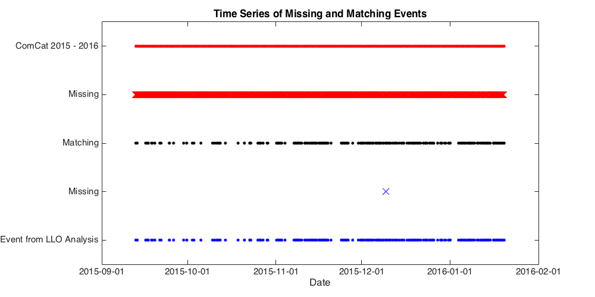Matching events
The following events were determined to be 'matching' based on the thresholds defined in initMkQCmulti.dat.
Exact matches ignored for rose histogram plot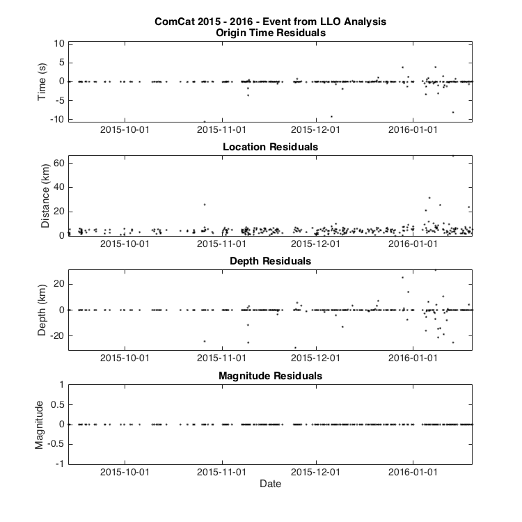 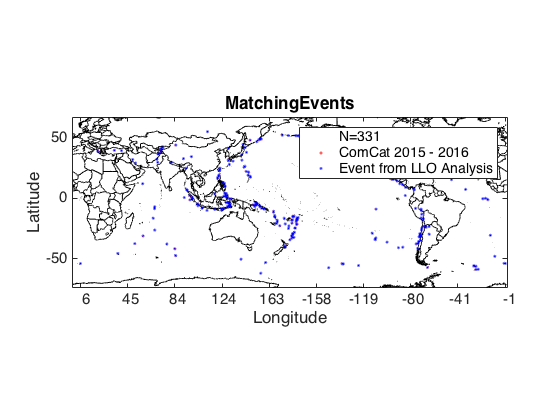 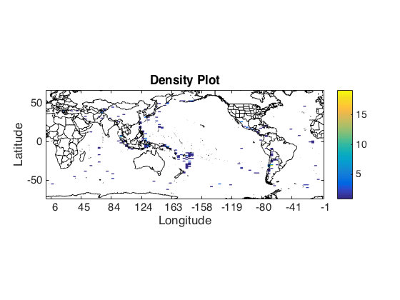 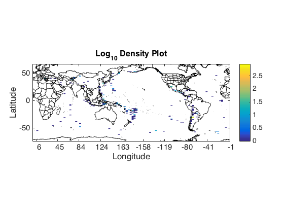 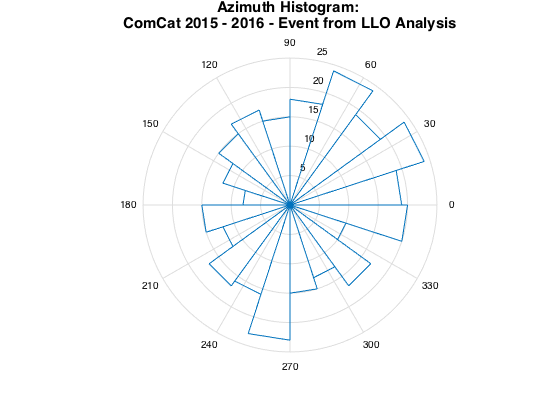
 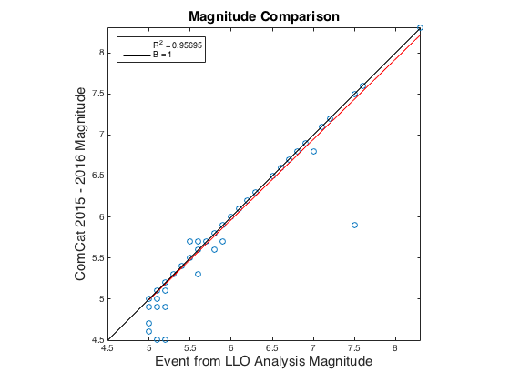 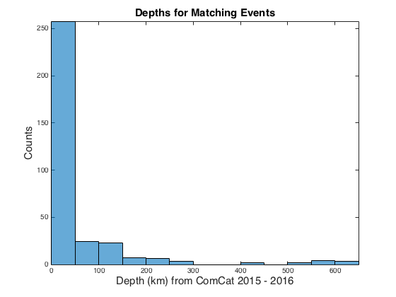 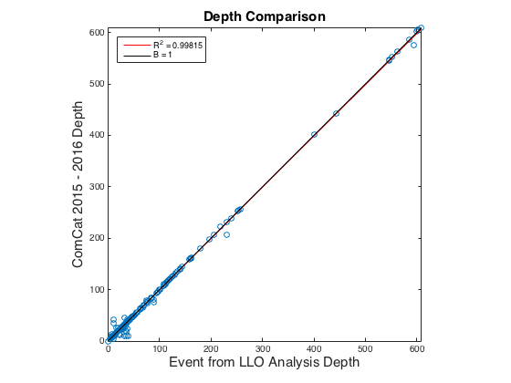 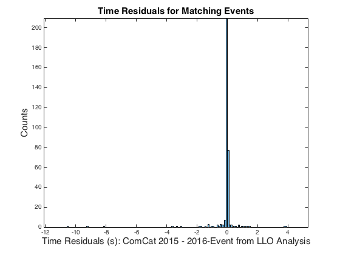 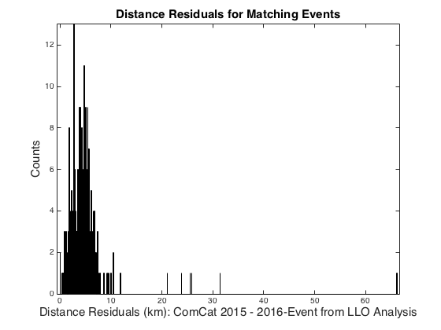 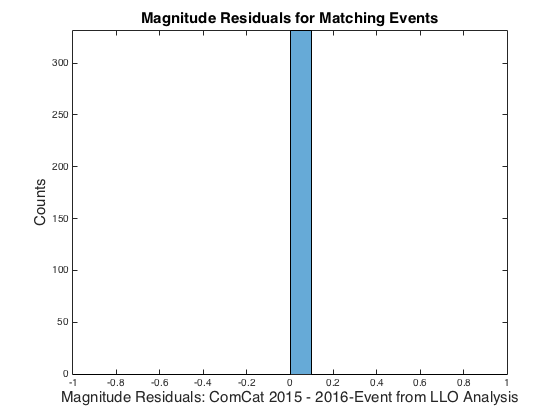 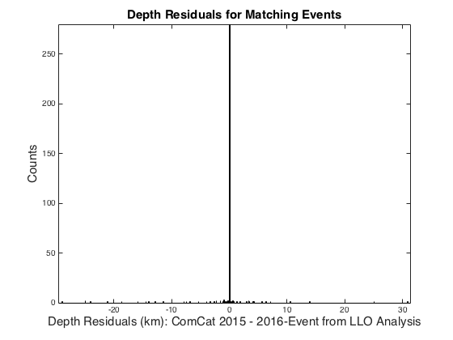
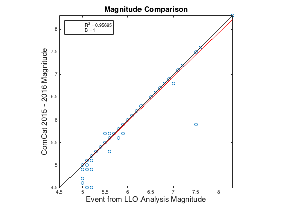 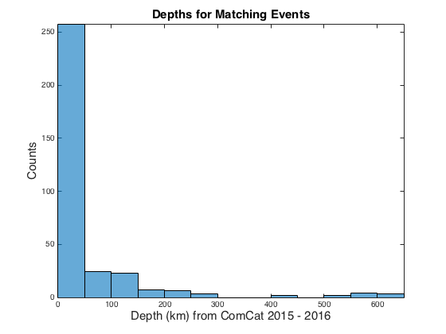 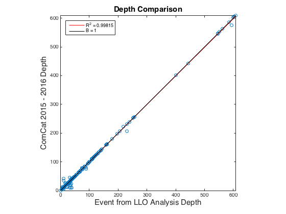 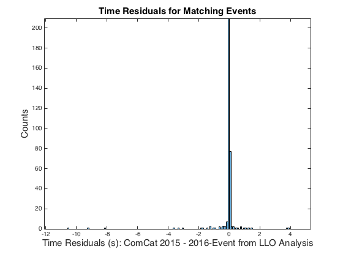 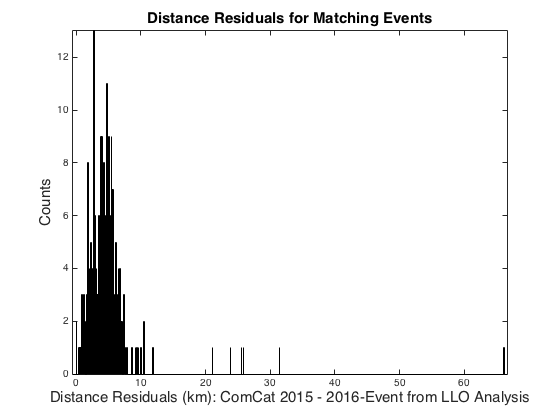 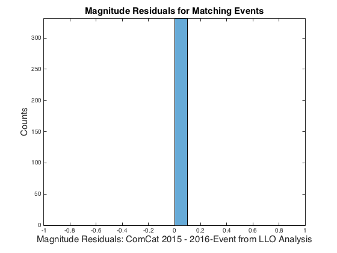 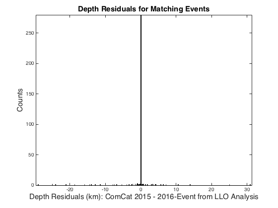 Missing Events
For a complete list of missing events, please click here
---Total Missing Events--- There are 2397 event(s) in ComCat 2015 - 2016 missing from Event from LLO Analysis -- There are 3 event(s) in Event from LLO Analysis missing from ComCat 2015 - 2016
No Similar Origin Time
--------------------------------------------------- 2395 events in ComCat 2015 - 2016 have no corresponding event in Event from LLO Analysis within 16 seconds. --------------------------------------------------- 1 events in Event from LLO Analysis have no corresponding event in ComCat 2015 - 2016 within 16 seconds. ---------------------------------------------------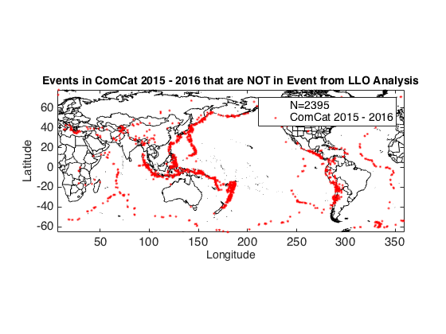 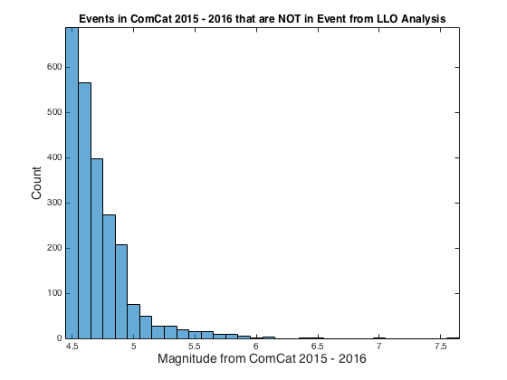 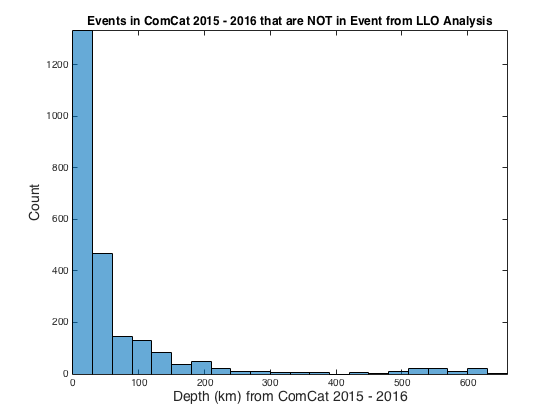 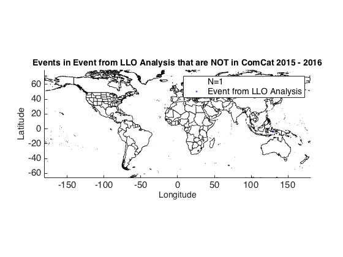 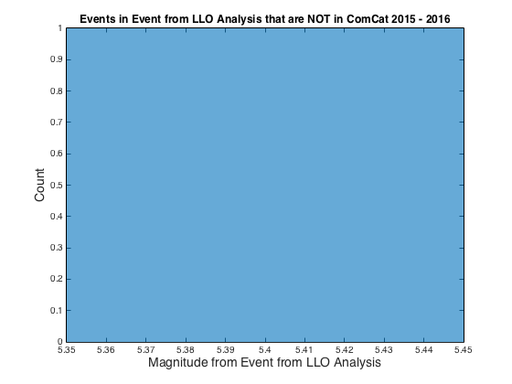 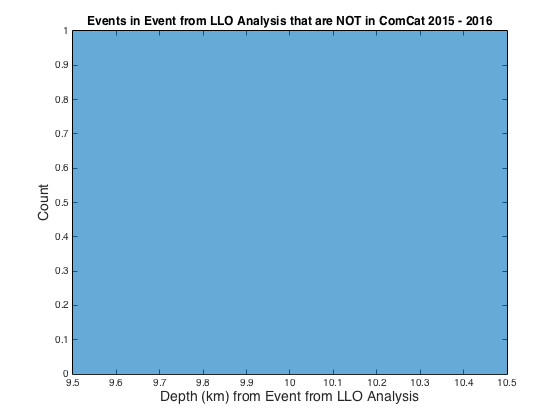
Location Disagreement
The following events had matching times, but the distance residuals are greater than 100 km.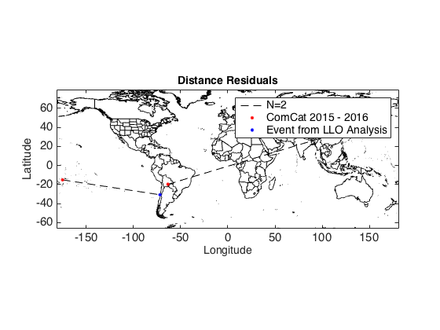 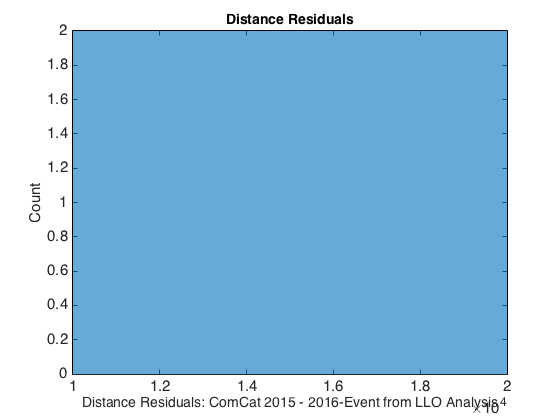
Potential Problem Events
The following events were determined to be potential problem events due to descrepencies between the two catalogs.
Depth Differences
The following events had matching times, locations, and magnitudes but the depth residuals are greater than 9999 km. No events.
Magnitude Differences
The following events had matching times, locations, and depths, but the magnitide residuals are greater than 9999. No events.
Depth and Magnitude Differences
The following events matched but the depth and magnitude residuals were greater than 9999 km and 9999, respectively. No events